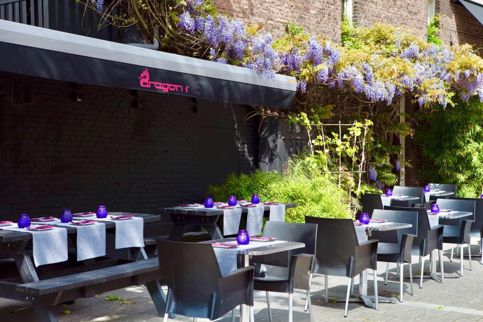
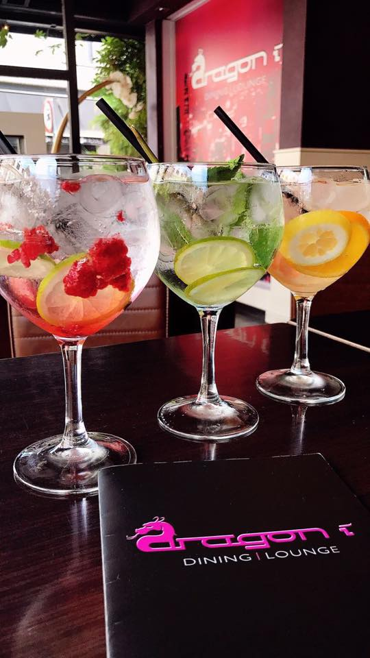

Amstelveenseweg 154, Amsterdam
Proeven, delen en verrassen.
Kleine gerechten uit de brede Aziatische keuken. Van Peking eend pannenkoekjes en sashimi tot Koreaanse bulgogi beef: u stelt zelf uw menu samen.
Dinsdag t/m zondag vanaf 17:00 open


Over ons
Proeven, delen en verrassen staat centraal bij Dragon i. De ruime kaart met kleine gerechten neemt u mee door de brede Aziatische eetcultuur en de rijke smaken die deze te bieden heeft.
Bij ons kunt u van de meest beroemde Aziatische hapjes genieten. Stel zelf uw menu samen uit verschillende kleine gerechten.
- ChinaPeking eend pannenkoekjes
- JapanSushi en sashimi
- KoreaBulgogi beef
- ThailandViskoekjes
- VietnamRicewraps


Menukaart
Kies een paar gerechten per persoon en deel ze aan tafel. Tik op + om alvast een selectie te maken; zo ziet u wat het samen kost.
Cold Dishes
Soups
Sashimi
Sushi
Steamed
Fried
Grilled
Stirfried
Side Dishes
Chef's Menu
Vanaf 2 personen.
44,50 p.p.
Prijzen in euro's.
0 gerechten, samen € 0,00
Thuis van Dragon-I genieten
U kunt eenvoudig via onze website bestellen voor bezorging of afhaal. Afhalen is vanaf 16:00 mogelijk.
Online bestellenImpressie

Openingstijden
| Maandag | gesloten |
|---|---|
| Dinsdag | 17:00 – 22:00 |
| Woensdag | 17:00 – 22:00 |
| Donderdag | 17:00 – 22:00 |
| Vrijdag | 17:00 – 22:30 |
| Zaterdag | 17:00 – 22:30 |
| Zondag | 17:00 – 22:00 |
Afhalen is vanaf 16:00 mogelijk.
Reserveren
Een tafel binnen of op het terras? Bel ons, dan zetten we hem voor u klaar.
020 770 64 20